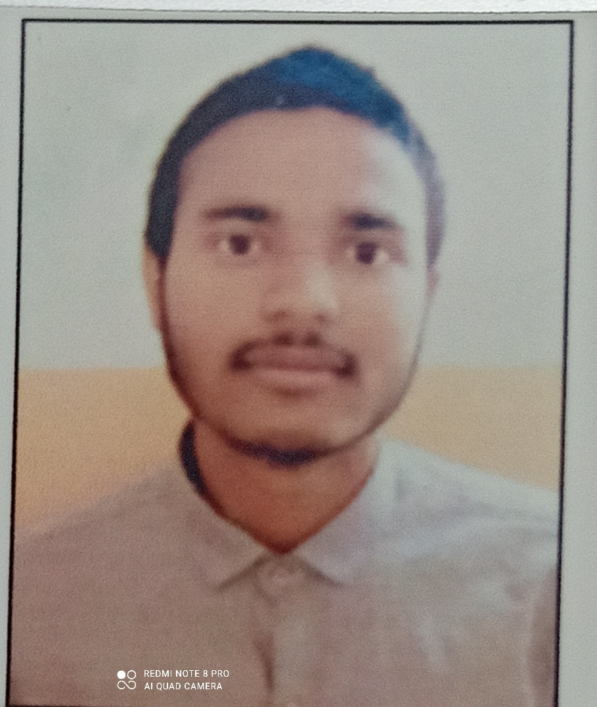

Ayush Prajapati

Summary
I am a hardworking and dedicated individual with experience in Programming and Web Development.
Education
- BTech, Civil Engineering, IIT Kanpur (2020-2024)
Work Experience
Stamatics, IIT Kanpur
May 2022 - July 2022
- Covered some string matching algorithms like Rabin-Karp and Knuth-Morris-Pratt(KMP)
- Analysed cycle concepts in graph using BFS, topological sort and Kosaraju’s algorithm
- Explored bitmasking to develop programming logic and some basic concepts of number theory
Coding Blocks
May 2022 - July 2022
- File Zipper : Aimed at compressing files
- Chat List : All required operations viz. searching, insertion, deletion are performed in O(1) time
- Text Editor : In this part, undo functionality is implemented with the help of stack and uses OOPs concepts
Skills
- C/C++: ⭐️⭐️⭐️⭐️⭐️
- MATLAB: ⭐️⭐️⭐️
- SAP2000: ⭐️⭐️⭐️⭐️
Awards and Certification
- Secured 1st position in ICSE exam 2017 in Silver Grove School
Others